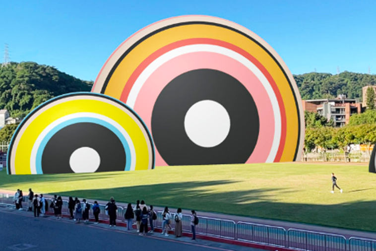

理解
梳理場域、受眾、議題與限制，先確認計畫真正需要回應的問題。
01 ABOUT HU'S ART · 關於胡氏
胡氏藝術是一個以策展思考為核心的藝術顧問團隊。我們在文化想像與現實條件之間，建立一條可以共同前進的路。
觀看代表專案 ↗
OUR POSITION
我們的位置
從公共藝術、城市美學到品牌與文化跨界計畫，胡氏藝術連結創作者、策展人、建築團隊、公共機構與企業資源。
每一個計畫都從研究開始，經過協作、製作與溝通，在限制中找到最適切的實現方式。
HOW WE WORK
工作方法
梳理場域、受眾、議題與限制，先確認計畫真正需要回應的問題。
媒合藝術家與跨領域專業，讓不同知識與立場在共同目標下相遇。
整合製作、工程、溝通與現場執行，將策展概念轉化為可長期發展的成果。
SELECTED PRACTICE
代表實踐
CAPABILITIES
核心能力
建立策展概念、藝術策略與清楚的文化定位。
串聯藝術、建築、設計與品牌資源。
整合製作、工程、行政與現場執行。
透過導覽、講座、影像與出版延伸影響。
PROVEN IN PRACTICE
長期實踐
藝術顧問經驗
完成計畫
藝術家合作網絡
機構與品牌夥伴
LEADERSHIP
執行長
藝術顧問的工作，是在文化想像與現實條件之間，找到一條能夠實現的路。
胡氏藝術創辦人暨執行長
長期投入藝術顧問、公共藝術與文化計畫，帶領團隊整合藝術家、建築、公共機構與企業資源。
OUR JOURNEY
重要記事
從藝術專業出發，連結藝術家、公共空間與組織需求。
投入公共藝術與文化空間計畫。
深化建築、設計與品牌協作。
以策展與教育回應新的公共議題。
走向長期文化策略與合作關係。
09 START A CONVERSATION · 與我們聯絡
告訴我們你的目標、場域與計畫階段，
我們會一起找出適合的藝術策略。